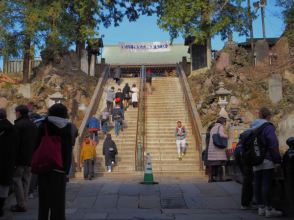
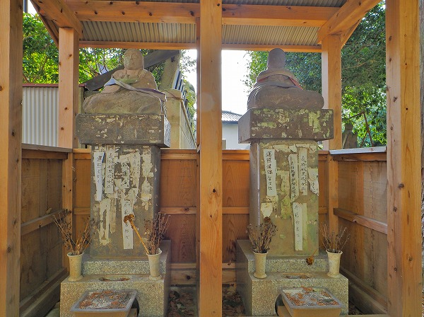
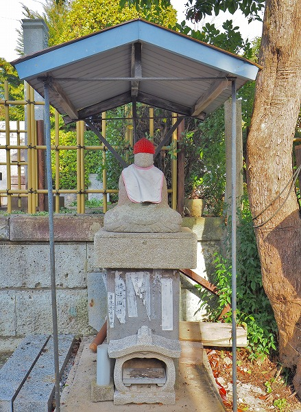
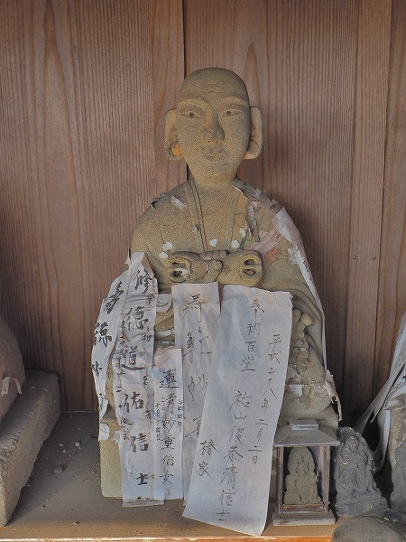

最初に言っておくけど
今回は長いよ。
成田山新勝寺。
御存じ
関東屈指の名刹である。
この成田山周辺に
札打ちの習俗があるという。
実は私、成田山に縁がある家の家長として毎年護摩祈祷を受けに行く身なので成田山には
ちょっとは詳しいのである。
という訳で成田山をあまり御存じない方に向けて
極私的成田山案内も兼ねて成田の札打ち習俗を紹介していこうと思う。
初心者の皆様にも優しい珍寺大道場なのであーる（え～、そうだっけ？←そうなんです！）。
成田山と言えば歌舞伎の市川家と参拝客の多さと川魚料理をはじめとした参道の充実具合が有名だ。
あと節分の豪華ゲストによる豆撒き。毎年有名力士と大河ドラマの出演者がやって来るのだ。
近年は空港にも近いのでフライトまでの暇つぶしに海外からの観光客も多く訪れている。
参道には文化財級の商家が延々と並ぶ。
惜しいのは木造三階建+望楼の大野屋がこの年解体されてしまった事だ。
在りし日の大野屋（2010年）
成田山参道のシンボルだっただけに残念でならない。
名物の漢方薬屋。
各種珍獣がズラリと並んでいる様は圧巻。
そんな参道を歩いていると参道が二股に分かれる。
その三叉路に
かつての成田山新勝寺の本堂であった薬師堂がある。
その薬師堂の前にあるのがこちらの石像。
石像や台座に多くの紙札が貼られている。
そう、これが今回のメインテーマ、
成田の札打ち習俗なのだ。
成田山周辺の霊場や墓地などにはこのように
亡くなった人の戒名を記した紙札を石像に貼って死者の供養をする習俗がある。
かつて当サイトで紹介した
山陰の札打ち習俗や
千葉の四十九堂、
茨城の百堂巡りなどに非常によく似通った習俗である。
これらはみな死者供養のためで、山陰では地蔵、茨城や千葉では地蔵や弘法大師の石像に貼られている。
え？コレの何が面白いの？という方は
千葉の四十九堂辺りを御覧になって私の初期衝動を追体験してくだされ。
上記の札打ち習俗が遺族、つまり個人によって自発的に行われているのに対し、ここ成田の札打ち習俗は
成田山新勝寺の僧侶を先達として、近在の成田山を信仰する十善講の主導で行われている点が他の札打ち習俗、特に四十九堂や百堂巡りの習俗と大きく異なる。
この講が毎月21日に市内の新四国八十八カ所を巡る際に
新しく仏が出た家の者が一緒に巡礼し、墓地や札所にある大師像や地蔵像に紙札を貼り、死者の供養をする、という形式になっている。
また4月には大まわりといい、15日かけてかなり広域の札所を巡る事になっている。
これは私見だが、少なくとも千葉の四十九堂や茨城の百堂巡りの習俗はこの
成田山の札打ち習俗がルーツとなっているのではなかろうか。
常総エリアの信仰の起点である成田山が始めた習俗がその周辺地域に伝播していったと考えるのがスムーズであろう、と考えられる（私見ね）。
さて、再び参道をウロウロしよう。
成田山の護摩供養は一旦受付で申込をして、その後、小1時間ほど経過したのちに護摩祈祷を終えた札を本堂脇の翼殿で受け取る、というシステムになっている。
従って申込をした後、1時間ほど暇なので（いや、真面目な信者は本堂で護摩祈祷を一緒にいなければならないのだろうが）、参道をぶらぶらするのが習わしなのだ。
で、先程の薬師堂からさらに成田駅方面へぶらぶら。
すると参道の一画にこんな地図がある。
ここ、地図の左側がドアになっていることを知る者は少ない。
で、ドアを開けると
南庵墓地という共同墓地になっているのだ。
墓地に入るとすぐに
六地蔵と2体の
弘法大師の石像が並んでいる。
ここにも戒名が記された紙札が貼られている。
思いの外、札打ちの習俗は成田山周辺ではメジャーなようだ。
さらに先程の薬師堂に戻り、三叉路の西に進む。
この辺りになると参道の賑わいも落ち着いてくる。
久根の内墓地。
古い石塔が並んでいる。
墓地の入り口には何故か東京ガスの整圧器室なる建物がある。
その建物に付随するように石像が並んでいる。
3体とも
弘法大師の石像である。
そしてその石像や台座に札打ちが成されている。
普通は墓地の入口には六地蔵の石像が並んでいるものだが、ここでは何故か弘法大師の石像が3体も並んでいた。
この辺、弘法大師に所縁の深い成田山ならではの現象と捉えざるを得ないが、それにしても墓地と言えば普通六地蔵を配するのが全国的な常識だと思うのだが。
それを曲げてまで墓地に弘法大師を置くというのは高僧とはいえ、いち僧侶が地蔵菩薩と同様の地位にまで上り詰めた、という意味なのであろうか。凄げえな。
さらに進むと、成田線の線路に線路にぶつかる。
その線路沿いに2体の大師像が祀られている。
隣には三界供養塔が建っている。
こちらにも台座に札打ちがなされている。
先程の墓地や薬師堂もそうだが、みな大師像は小屋がかけられており、大事に祀られている印象がある。
さすが関東の弘法大師信仰の拠点、成田である。
さて、護摩祈祷も終わった頃なので再び成田山新勝寺に戻る。
ハイ。
ここから成田山新勝寺の紹介ね。
平成19年に建て替えられた総門。
1月中は新年モードで総門を潜って右側のエリアでは熊手や小槌や暦や達磨などの縁起物の屋台が出ている。
巨大な提灯が印象的な仁王門。
仁王門を潜るとさらに階段が続く。
成田は案外起伏にとんだ街で、総門がある辺りが低くなっていて、門前町は総門から上り坂になっており、同じように総門から仁王門を経て本堂までも階段で登る様になっている。
で、その仁王門の右脇にあるのが
開運地蔵尊。
屋根に覆われた地蔵尊と3体の弘法大師の石像が並んでいて、大師像だけに札打ちがなされている。
どうも
屋根、弘法大師、札打ちがセットになっているようだ。

仁王門を潜ると急な石段が。
石段の右には亀の形の石が。
そして左右に寄進した人の石碑が林立している。
階段を昇りきると正面に大本堂。
昭和43年建立のコンクリ造の建物である。
1月中は新年特別法要が行われているので、参拝客も多い。
印象的なのが本堂裏の擁壁に貼り付けられた奉納者の石碑。
延々と続いており、成田山信仰の篤さを物語っている。
本堂左奥の
額堂。いわゆる絵馬堂。
七代目市川團十郎の石像。
現在の十三代目市川団十郎（元海老蔵ね）もここで襲名お練りをしたが、いわゆる市川家、成田屋と成田山の関係は非常に深い。
成田屋あっての成田山、成田山あっての成田屋、ともいえよう。
そんな額堂で見逃せないのがこちら。
不動明王と三十六童子の奉納額である。
これは関東大震災の際、横浜復興に携わった職方の36人を童子に見立てて奉納したもので、中々の力作である。
成田山参詣の際には見逃すことのなきよう。
さらに私的に好きなのが大本堂左手にある土蔵造りの聖天堂の前にある
二股大根の石額。
聖天サマだけに多分にセクシャルな意味なんでしょう。
このように成田山は真言宗と民間信仰が入り混じった不思議な空間なのだ。
右手が現在の大本堂。
左手が旧本堂でもある釈迦堂。
大根奉納の聖天堂は釈迦堂の左隣にある。
聖天堂を過ぎると、成田山境外になる。
そこには三角形の広場があり、その広場を囲うように店が並んでいる。
縁起物や土産店、飲食店が多いが、中でも多いのが
占いの店。
この日はコロナ禍だったので人出はイマイチだったが、普段は人気のある占い店は行列が出来るほどの賑わいをみせているのだ。
さて、札打ちの話に戻りますよ。
先程の釈迦堂の前に上へと登るスロープがある。
そのスロープを登ると
出世稲荷大明神という稲荷社がある。
成田山内でも一番高い辺りに位置している。
この辺は成田山の敷地内ではあるのだが、
信仰施設としては若干番外地に近い感じ。
そもそもお稲荷さんだしね。
とはいえ成田山パワーで結構参拝者は多い。
多くの陶製の狐が奉納されている。
さらに古くからの石製の狐像も数多く奉納されており、その信仰の篤さを感じることが出来る。
絵馬も真っ赤。
何かにつけて押しの強い印象だ。
で、本題です。
この稲荷社の下にズラリと石像が並んでいて、そこに札打ちがなされているのだ。
中央に地蔵菩薩、左右に10体の弘法大師石像。
訪問時はほとんど剥がされていたが、その跡から、それなりの紙札が貼られていたようだ。
その出世稲荷大明神の斜め向かいに霊場のようなところがある。
ここも成田山の敷地内なのだろうが、そもそもスロープを登ったエリア全体が番外地的な雰囲気で稲荷以外は訪れる人は少ない。
そこにも札打ちの痕跡があった。
これも弘法大師の石像だった。

さらに隣にも小さな祠があった。
手前は弘法大師の石像。
祠の中は地蔵だった。
先程の墓地もそうだが、
弘法大師と地蔵の関係性が良く判らない。
少なくともここは地蔵が祠の中にあり、弘法大師は祠の外にあった。
当然、弘法大師より地蔵菩薩の方がメイン、という図式になるのだろうが、中には並列してある所もあり、そのポジショニングが判らない。
さらに進むと
七霊地蔵尊という墓地のようなところがある。
この辺りも成田山の敷地内ながらも番外地のような所だ。
祠の中には石のお地蔵さんが立っていた。
台座を中心に多くの札打ちがなされていた。

隣の弘法大師の石像の方が多くの札打ちがなされていた。
地蔵と弘法大師、信仰としてどちらが上なのだろう？
やはりこの成田という土地では弘法大師の方に分があるのだろうか。
奥には墓石が並んでいる。
ただし、新規の墓は少なく、ほとんどが古い墓石だ。
個人が建てた地蔵だが、屋根が架けられよく見ると台座には札が貼られていた痕跡が残る。
個人のお地蔵さんとかにも貼っちゃうんだあ。
さらに南下して
塚之越庵という墓地。

この辺りはもう成田山の境内ではない。
少し先には旅館や飲食店が並ぶエリアだ。
もちろんここにも弘法大師の石像、屋根、そして札打ちの3点セットが。

奥にもありました。
さらに奥にも。
こちらはお地蔵さんかと思ったが、右手を上げているようなのでやはり弘法大師像だと思う。
帽子とか涎掛けとか紛らわしいのだが、成田では
弘法大師と地蔵が限りなく近い存在として扱われている証拠だろう。
次に訪れたのは成田山より西に延びる西参道沿いにある
地蔵堂。
隣には小さな神社がある。
たっぷりと札が貼られていた。
地蔵堂とはいえ石像は全部弘法大師像。
そもそも弘法大師の石像が複数あること自体が良く判らない。
ここは4体だが最低2体、多ければ10体。
いや、気持ちは判らんでもないが、多過ぎないか？
実在の坊さんなんだから普通1体でいいでしょ。
まあ、それだけ神格化されてるんだな、成田では。
次に訪れたのは西参道を更に西に進み公園通りという大通りとの交差点近くにある
石橋地蔵と
清水地蔵。
二つの地蔵が祀られている。

右が石橋地蔵。
左が清水地蔵。
石橋地蔵の胴体には札打ちの痕跡があったが、清水地蔵にはそれが無かった。
何か理由があるのだろうか？
次に一旦成田山に戻る。
向かったのは成田山の境内と外周道路を分かつ擁壁にの中にある大師像。
擁壁の上には境内の光明堂が見える。
順番が滅茶苦茶で申し訳ないが、ここが
巡礼の結願所となっている。
札打ちにおいても
最もホットなスポット、という事になろう。
それにしても、不思議な場所にあるものだ。
場所的には成田山の外から参拝するのだが、実際には成田山境内にあって外に向いている、という微妙な立ち位置（座ってるが）。
これはつまり札打ちの習俗はあくまでも民間の信仰であり、
真言宗智山派の大本山である新勝寺とは一線を画するという立場の表明なのかもしれない。
なので、純粋な意味での成田山境内には札打ちがされている所はない。
ここのようにギリギリ境内、じゃない所に札所が設定されているのだ。
逆に言えばこの
札打ちの場所を訪ねる作業は成田山という存在を逆照射し、成田山新勝寺の聖域のエッジを浮かび上がらせることが出来るのである。
台座には盛大に札打ちがなされていた。
隣には恵比寿大国。
そして講の巡礼の際に貼られる弘法大師の描かれた紙も貼られていた。
お次は成田山から東に延びる東参道沿いにある
田町墓地。
階段を上り、右に曲がると墓地、そのまま真っ直ぐ進むと成田山が所有する成田山公園という巨大な公園に出る。
ここもまた成田山を象るエッジ上に位置する。
墓地の入り口には水子地蔵があり、風車や千羽鶴があり、カラフルな印象。
その後ろに小さなお堂がある。
お堂の右は墓地。左の道を真っ直ぐ行ってさらに階段を上ると成田山公園。
ここも弘法大師。
ばっちり札打ちされてました。

他の場所は結構札が剥がされていたが、ここでは結構貼られたままになっていた。
札を剝がしたりするペースも管理者によって異なるのだろう。
奉納された年をみると平成末のものも結構ある。
つまりここ8年ほどは剥がしていない、という事になる。
あくまでも札打ちの対象は弘法大師だ。

以前茨城で見た百堂巡りの紙札もあった。
わざわざ茨城から札打ちにやって来たのだろうか？

ここは新四国八十八カ所の47番目の札所だ。
ちなみにこの
新四国八十八カ所の巡礼は天保10年頃から始まったそうだ。
奥の墓地に行くとそこにも屋根、弘法、札打ちの3点セットが。
後の白い建物は成田高校である。
で、さらに東参道を東に進むと
永興寺というお寺がある。
その入口に大日如来を祀る小堂がある。

享保15年作の大日如来。昭和になってからこの地に移って来たという。

ここは珍しく弘法大師がいない。
一番奥のお地蔵さん（かな？）は特に人気のようで顔も体も札まみれでした。
他にも成田山周辺の墓地の入口にある地蔵をチェックしてみたが…
成田市土屋
成田市東和田
成田市東和田長光寺
いずれも札打ちの痕跡は見られなかった。
これらの墓地はいずれも成田山からやや離れている。
やはり札打ちは
成田山に極めて近い場所にある墓地、あるいは八十八カ所霊場に限られているようだ。
ザックリ言うと成田山を中心として成田駅を起点としたJR成田線、京成線、そして国道51号、空港通りに囲まれた三角地帯の内側が主たる札打ちの場所と思われる。
手持ちの資料と地図を見た限りではこの辺が限界か。
もう少し調べてからもう一度成田の札打ち習俗をリサーチしてみようと思った次第。
で、また成田に再訪したよ！
成田の札打ち習俗2に続く
参考文献；広報なりた平成26年9月15日号